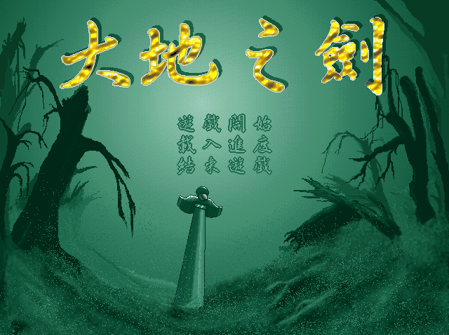
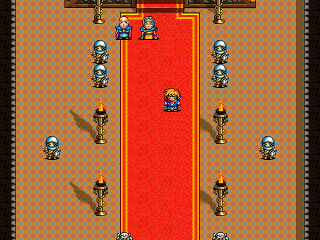

名稱：大地之劍 (中文版) 簡介：天堂鳥1998年出品的策略角色扮演遊戲 [待補]。   保護：光碟，破解碼（放入光碟才有背景音樂）： KBMAIN.exe 74 05 66 3B C6 74 0D 90 90 -- -- -- EB -- 備註：建議在PCem/86Box+Win9x系統上執行，否則遊戲速度會過快。 修改：KBMAIN.exe 1.略除顯示模式必須設成256色的限制 74 0D 68 94 EB -- -- --

